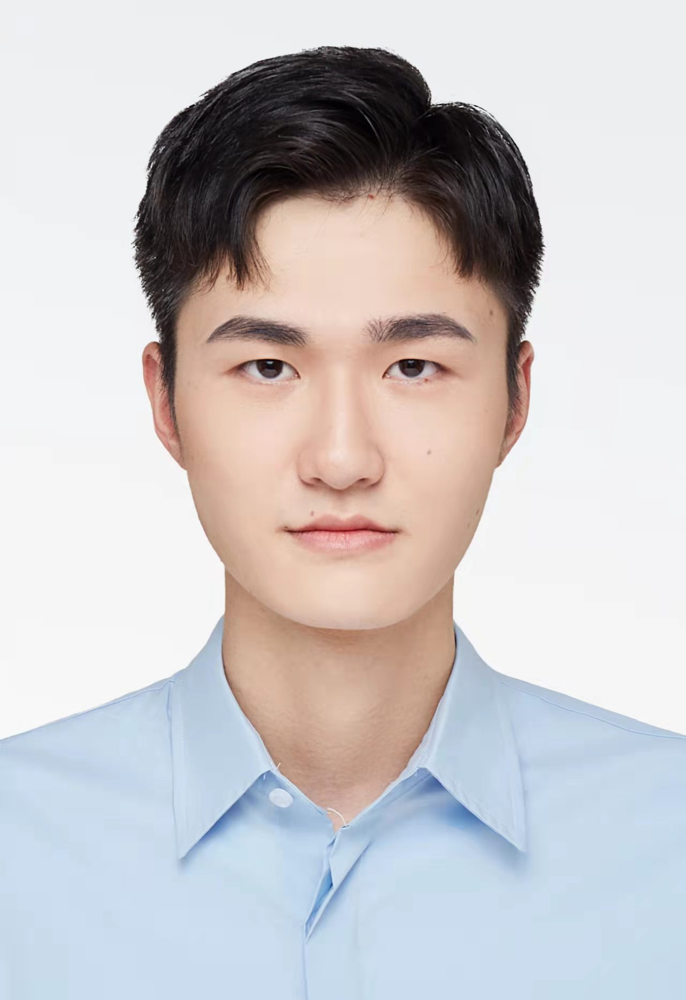

|  | M.Sc. Student, |
Currently I am a M.Sc. student in the School of Engineering and Informatics, University Of Sussex.
Research Interests: Machine Learning, Computer Vision.
M.Sc , University of Sussex, Brighton, UK [2021 ~ 2023]
B.Eng , Hefei Normal University, Hefei, Anhui [2017 ~ 2021]
|